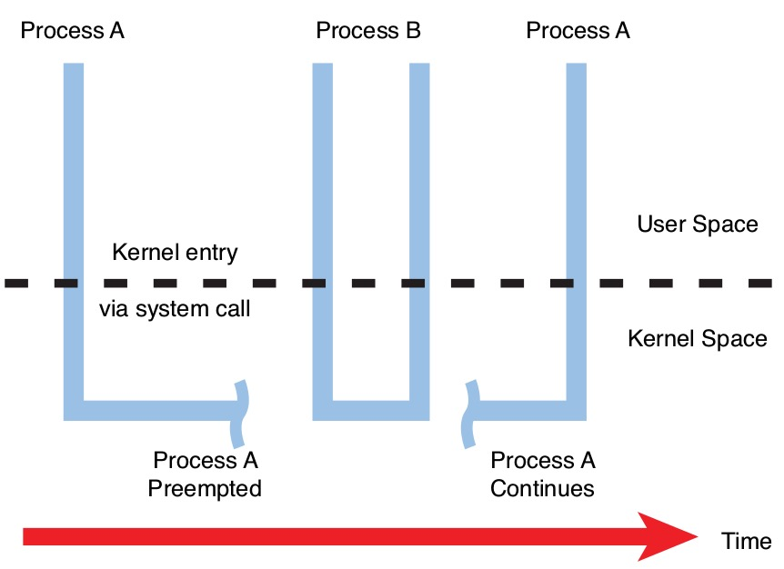

概述
- 本篇汇总一些 Linux 内核抢占(preemption)的基础知识, 方便大家理解内核抢占
-
- 总体思路仍然是: 是什么, 有啥好, 怎么办
-
通过
grep resched_curr可以找出大多数标记抢占的场景, 这个技能也是通用： -
- 根据内核 API 来找场景. 这里内核 API
resched_curr是用于标记抢占的, 那么对内核源码进行grep resched_curr就可以找出大多数标记抢占的场景.
- 根据内核 API 来找场景. 这里内核 API
一 什么是内核抢占？
别急，咱们慢慢来。
1 先理解抢占 (preemption) 这个概念：
involuntarily suspending a running process is called preemption
夺取一个进程的 cpu 使用权的行为就叫做抢占。
2 根据是否可以支持抢占，多任务操作系统 (multitasking operating system) 分为 2 类：
1、cooperative multitasking os
这种 os，进程会一直运行直到它自愿停下来。这种自愿停止运行自己的行为称为 yielding。协作式多任务系统，一听就知道这是一个乌托邦式的系统，只有当所有进程都很 nice 并乐意经常 yielding 时，系统才能正常工作。如果某个进程太傻或者太坏，系统很快就完蛋了。
2、preemptive multitasking os
这种 os，会有一个调度器 (scheduler，其实就是一段用于调度进程的程序)，scheduler 决定进程何时停止运行以及新进程何时开始运行。当一个进程的 cpu 使用权被 scheduler 分配给另一个进程时，就称前一个进程被抢占了。
你可以把 sheduler 想象成非常智能的交警，交警按照一定的交通规则、当前的交通状况以及车辆的优先级 (救护车之类的)，决定了哪些车可以行驶、哪些车要停下来等待。
很明显，现阶段，preemptive os 优于 cooperative os。所以 Linux 被设计成 preemptive。
3 抢占的核心操作包括 2 个步骤：
1、从用户态陷入到内核态 (trap kernel)，3 个路径：
a. 系统调用，本质是 soft interrupt，通常就是一条硬件指令 (x86 的 int 0x80)。
b. 硬件中断，最典型的就是会周期性发生的 timer 中断，或者其他各种外设中断.
c. exception，例如 page fault、div 0。
2、陷入到内核态后，在合适的时机下，调用 sheduler 选出一个最重要的进程，如果被选中的不是当前正在运行的进程的话，就会执行 context switch 切换到新的进程。
4 根据抢占时机点的不同，抢占分为 2 种类型：
1、user preemption
这里的 user 并不是指在 user-space 里进行抢占，而是指在返回 user-space 前进行抢占，具体的：
When returning to user-space from a system call
When returning to user-space from an interrupt handler
即从 system call 和 interrupt handler 返回到 user-space 前进行抢占，这时仍然是在 kernel-space 里，抢占是需要非常高的权限的事情，user-space 没权利也不应该干这事。
2、kernel preemption
Linux 2.6 之前是不支持内核抢占的。这意味着当处于用户空间的进程请求内核服务时，在该进程阻塞（进入睡眠）等待某事（通常是 I/O）或系统调用完成之前，不能调度其他进程。支持内核抢占意味着当一个进程在内核里运行时，另一个进程可以抢占第一个进程并被允许运行，即使第一个进程尚未完成其在内核里的工作。
- 支持内核抢占(左) vs 不支持内核抢占(右):
- 举个例子：

在上图中，进程 A 已经通过系统调用进入内核，也许是对设备或文件的 write() 调用。内核代表进程 A 执行时，具有更高优先级的进程 B 被中断唤醒。内核抢占进程 A 并将 CPU 分配给进程 B，即使进程 A 既没有阻塞也没有完成其在内核里的工作。
内核抢占的时机：
When an interrupt handler exits, before returning to kernel-space
When kernel code becomes preemptible again
If a task in the kernel explicitly calls schedule()
If a task in the kernel blocks (which results in a call to schedule() )
二 为什么要引入内核抢占？
1 根本原因：
trade-offs between latency and throughput
在系统延迟和吞吐量之间进行权衡。
并不是说内核抢占就是绝对的好，使用什么抢占机制最优是跟你的应用场景挂钩的。如果不是为了满足用户，内核其实是完全不想进行进程切换的，因为每一次 context switch，都会有 overhead，这些 overhead 就是对 cpu 的浪费，意味着吞吐量的下降。
但是，如果你想要系统的响应性好一点，就得尽量多的允许抢占的发生，这是 Linux 作为一个通用操作系统所必须支持的。当你的系统做到随时都可以发生抢占时，系统的响应性就会非常好。
2 为了让用户根据自己的需求进行配置，Linux 提供了 3 种 Preemption Model。
A CONFIG_PREEMPT_NONE=y：不允许内核抢占，吞吐量最大的 Model，一般用于 Server 系统。
B CONFIG_PREEMPT_VOLUNTARY=y：在一些耗时较长的内核代码中主动调用 cond_resched()让出 CPU，对吞吐量有轻微影响，但是系统响应会稍微快一些。
C CONFIG_PREEMPT=y：除了处于持有 spinlock 时的 critical section，其他时候都允许内核抢占，响应速度进一步提升，吞吐量进一步下降，一般用于 Desktop / Embedded 系统。
D 另外，还有一个没有合并进主线内核的 Model: CONFIG_PREEMPT_RT
- 这个模式几乎将所有的 spinlock 都换成了 preemptable mutex，只剩下一些极其核心的地方仍然用禁止抢占的 spinlock，所以基本可以认为是随时可被抢占。
三 怎么操作?
1 抢占前检查
这里的检查是同时针对所有的 preemption 的。如果你理解了前面的 4 种 preempiton model 的话，应该能感觉到其实是不用太严格区分 user / kernel preemption，所有抢占的作用和性质都一样：降低 lantency，完全可以将它们一视同仁。
抢占的发生要同时满足两个条件：
- 需要抢占;
- 能抢占;
1、是否需要抢占？
判断是否需要抢占的依据是：thread_info 的成员 flags 是否设置了 TIF_NEED_RESCHED 标志位。
相关的 API：
- set_tsk_need_resched() 用于设置该 flag。
- tif_need_resched() 被用来判断该 flag 是否置位。
- resched_curr(struct rq *rq)，标记当前 runqueue 需要抢占。
2、是否能抢占？
- 抢占发生的前提是要确保此次抢占是安全的 (preempt-safe)。
- 什么才是 preempt-safe：不产生 race condition / deadlock。
值得注意的是，只有 kernel preemption 才有被禁止的可能，而user preemption 总是被允许，因此这时马上就要返回 user space 了，肯定是处于一个可抢占的状态了。
在引入内核抢占机制的同时引入了为 thread_info 添加了新的成员：preempt_count ，用来保证抢占的安全性，获取锁时会增加 preempt_count，释放锁时则会减少。抢占前会检查 preempt_count 是否为 0，为 0 才允许抢占。
相关的 API：
- preempt_enable()，使能内核抢占，可嵌套调用。
- preempt_disable()，关闭内核抢占，可嵌套调用。
- preempt_count()，返回 preempt_count。
2 什么场景会设置需要抢占 (TIF_NEED_RESCHED = 1)
通过 grep resched_curr 可以找出大多数标记抢占的场景。
下面列举的是几个我比较关心的场景。
1、周期性的时钟中断
时钟中断处理函数会调用 scheduler_tick()，它通过调度类(scheduling class) 的 task_tick 方法 检查进程的时间片是否耗尽，如果耗尽则标记需要抢占：
// kernel/sched/core.c
void scheduler_tick(void)
{
[...]
curr->sched_class->task_tick(rq, curr, 0);
[...]
}
Linux 的调度策略被封装成调度类，例如 CFS、Real-Time。CFS 调度类的 task_tick() 如下：
// kernel/sched/fair.c
task_tick_fair()
-> entity_tick()
-> resched_curr(rq_of(cfs_rq));
2、唤醒进程的时候
当进程被唤醒的时候，如果优先级高于 CPU 上的当前进程，就会触发抢占。相应的内核代码中，try_to_wake_up() 最终通过 check_preempt_curr() 检查是否标记需要抢占：
// kernel/sched/core.c
void check_preempt_curr(struct rq *rq, struct task_struct *p, int flags)
{
const struct sched_class *class;
if (p->sched_class == rq->curr->sched_class) {
rq->curr->sched_class->check_preempt_curr(rq, p, flags);
} else {
for_each_class(class) {
if (class == rq->curr->sched_class)
break;
if (class == p->sched_class) {
resched_curr(rq);
break;
}
}
}
[...]
}
- 参数 "p" 指向被唤醒进程
- "rq" 代表抢占的 CPU。
-
如果 p 的调度类和 rq 当前的调度类相同，则调用 rq 当前的调度类的 check_preempt_curr() (例如 cfs 的 check_preempt_wakeup()) 来判断是否要标记需要抢占。
-
如果 p 的调度类 > rq 当前的调度类，则用 resched_curr() 标记需要抢占，反之，则不标记。
3、新进程创建的时候
如果新进程的优先级高于 CPU 上的当前进程，会需要触发抢占。相应的代码是 sched_fork()，它再通过调度类的 task_fork() 标记需要抢占：
// kernel/sched/core.c
int sched_fork(unsigned long clone_flags, struct task_struct \*p)
{
[...]
if (p->sched_class->task_fork)
p->sched_class->task_fork(p);
[...]
}
// kernel/sched/fair.c
static void task_fork_fair(struct task_struct \*p)
{
[...]
if (sysctl_sched_child_runs_first && curr && entity_before(curr, se)) {
resched_curr(rq);
}
[...]
}
4、进程修改 nice 值的时候
如果修改进程 nice 值导致优先级高于 CPU 上的当前进程，也要标记需要抢占，代码见 set_user_nice()。
// kernel/sched/core.c
void set_user_nice(struct task_struct \*p, long nice)
{
[...]
// If the task increased its priority or is running and lowered its priority, then reschedule its CPU
if (delta < 0 || (delta > 0 && task_running(rq, p)))
resched_curr(rq);
}
还有很多场景，这里就不一一列举了。
3 什么场景下要禁止内核抢占 (preempt_count > 0)
有几种场景是明确需要关闭内核抢占的。
1、访问 Per-CPU data structures 的时候
看下面这个例子：
struct this_needs_locking tux[NR_CPUS];
tux[smp_processor_id()] = some_value;
/_ task is preempted here... _/
something = tux[smp_processor_id()];
如果抢占发生在注释所在的那一行，当进程再次被调度时，smp_processor_id() 值可能已经发生变化了，这种场景下需要通过禁止内核抢占来做到 preempt safe。
2、访问 CPU state 的时候
这个很好理解，你正在操作 CPU 相关的寄存器以进行 context switch 时，肯定是不能再允许抢占。
asmlinkage **visible void **sched schedule(void)
{
struct task_struct \*tsk = current;
sched_submit_work(tsk);
do {
// 调度前禁止内核抢占
preempt_disable();
\_\_schedule(false);
sched_preempt_enable_no_resched();
} while (need_resched());
sched_update_worker(tsk);
}
3、持有 spinlock 的时候
支持内核抢占，这意味着进程有可能与被抢占的进程在相同的 critical section 中运行。为防止这种情况，当持有自旋锁时，要禁止内核抢占。
static inline void \__raw_spin_lock(raw_spinlock_t \*lock)
{
preempt_disable();
spin_acquire(&lock->dep_map, 0, 0, \_RET_IP_);
LOCK_CONTENDED(lock, do_raw_spin_trylock, do_raw_spin_lock);
}
还有很多场景，这里就不一一列举了。
4 真正执行抢占的地方
这部分是 platform 相关的，下面以 ARM64 Linux-5.4 为例，快速看下执行抢占的具体代码。
A 执行 user preemption
a 系统调用和中断返回用户空间的时候：
它们都是在 ret_to_user() 里判断是否执行用户抢占。
// arch/arm64/kernel/entry.S
ret_to_user() // 返回到用户空间
work_pending()
do_notify_resume()
schedule()
// arch/arm64/kernel/signal.c
asmlinkage void do_notify_resume(struct pt_regs \*regs,
unsigned long thread_flags)
{
do {
[...]
// 检查是否要需要调度
if (thread_flags & \_TIF_NEED_RESCHED) {
local_daif_restore(DAIF_PROCCTX_NOIRQ);
schedule();
} else {
[...]
} while (thread_flags & \_TIF_WORK_MASK);
}
B 执行 kernel preemption
a 中断返回内核空间的时候：
// arch/arm64/kernel/entry.S
el1_irq
irq_handler
arm64_preempt_schedule_irq
preempt_schedule_irq
\_\_schedule(true)
// kernel/sched/core.c
/_ This is the entry point to schedule() from kernel preemption _/
asmlinkage **visible void **sched preempt_schedule_irq(void)
{
[...]
do {
preempt_disable();
local_irq_enable();
\_\_schedule(true);
local_irq_disable();
sched_preempt_enable_no_resched();
} while (need_resched());
exception_exit(prev_state);
}
b 内核恢复为可抢占的时候：
前面列举了集中关闭抢占的场景，当离开这些场景时，会恢复内核抢占。
例如 spinlock unlock 时：
static inline void \__raw_spin_unlock(raw_spinlock_t \*lock)
{
spin_release(&lock->dep_map, 1, \_RET_IP_);
do_raw_spin_unlock(lock);
preempt_enable(); // 使能抢占时，如果需要，就会执行抢占
}
// include/linux/preempt.h
#define preempt_enable() \
do { \
barrier(); \
if (unlikely(preempt_count_dec_and_test())) \
\_\_preempt_schedule(); \
} while (0)
c 内核显式地要求调度的时候：
内核里有大量的地方会显式地要求进行调度，最常见的是：cond_resched() 和 sleep()类函数，它们最终都会调用到 __schedule()。
d 内核阻塞的时候：
例如 mutex，sem，waitqueue 获取不到资源，或者是等待 IO。
这种情况下进程会将自己的状态从 TASK_RUNNING 修改为 TASK_INTERRUPTIBLE，然后调用 schedule() 主动让出 CPU 并等待唤醒。
// block/blk-core.c
static struct request *get_request(struct request_queue *q, int op,
int op_flags, struct bio \*bio,
gfp_t gfp_mask)
{
[...]
prepare_to_wait_exclusive(&rl->wait[is_sync], &wait,
TASK_UNINTERRUPTIBLE);
io_schedule(); // 会调用 schedule();
[...]
}